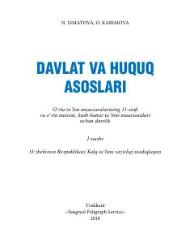

DV11-sinf o'quvchilari uchun davlat va huquq asoslari fanidan o'quv qo'llanma.
Ushbu darslik o'rta ta'lim muassasalarining 11-sinf o'quvchilari uchun mo'ljallangan bo'lib, davlat va huquq asoslari fanidan nazariy bilimlarni qamrab oladi. Kitobda O'zbekiston Respublikasi Konstitutsiyasi, inson huquqlari va qonun ustuvorligi kabi muhim huquqiy tushunchalar yoritilgan.